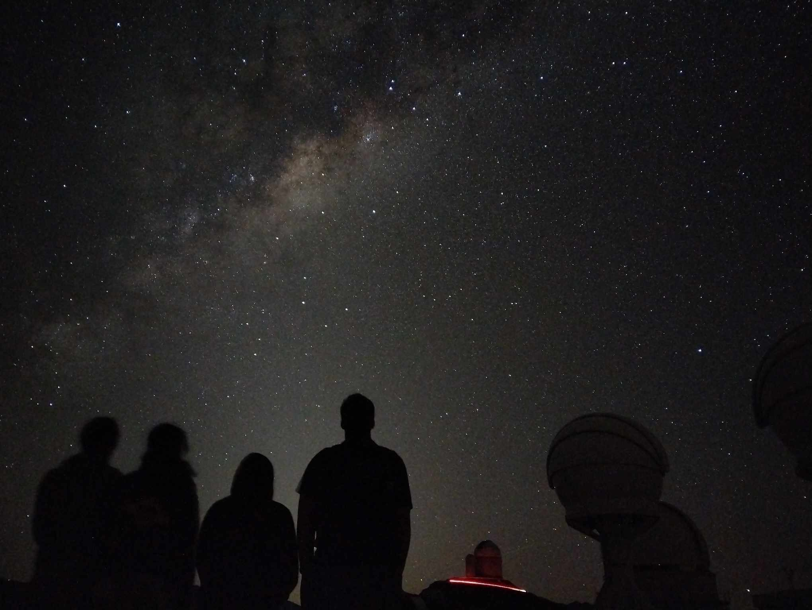
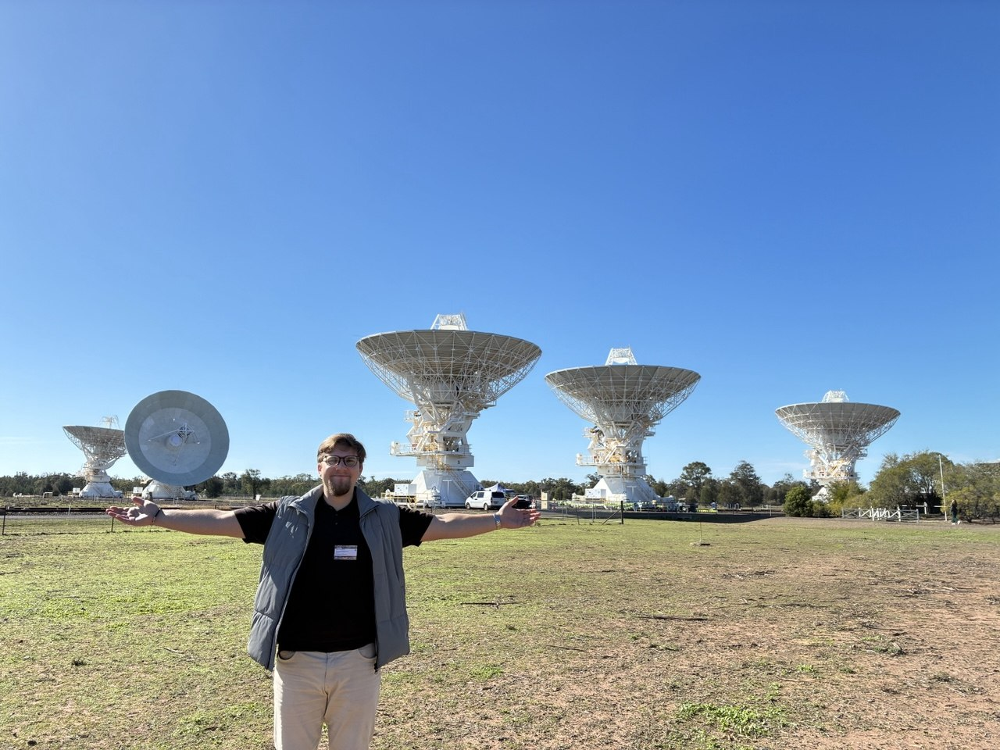

Hi, I am Maks, a postdoctoral researcher in Macquarie University (Australia), and this is my personal website.
The main scientific question my work contributes towards is exploring the possibility of second-generation planet formation by studying chemistry of evolved binary systems from stellar surfaces to circumbinary discs.
For this aim, I analyse high-resolution optical/near-infrared spectra (HERMES/Mercator, UVES/VLT, APOGEE) and mm-cm radio-interferometric maps of molecular gas species and dust continuum (ALMA, ATCA).
System description
A post-AGB star
Post-asymptotic giant branch (post-AGB) stars are evolved low- and intermediate-mass stars (initial masses of approximately 0.8-8 M☉) that have terminated their AGB evolution due to intense mass loss episodes. During this short-lived evolutionary phase (~100 000 years), the exposed stellar core contracts (R ~ 50-100 R☉) and evolves towards higher effective temperatures from ~4 000 K to ~20 000 K at approximately constant luminosity (L ~ 10 000 L☉), powered predominantly by H-shell burning and thermal pulses linked to short episodes of He-burning.
Post-AGB stars typically exhibit a dust infrared excess in their spectral energy distribution (SED) originating from a detached, expanding circumstellar shell of gas and dust, which subsequently becomes ionised to form a planetary nebula, while the central star becomes a white dwarf.
A post-AGB binary system
The majority of these systems is expected to consist of: i) a post-AGB primary star (see below), ii) a main-sequence (MS) secondary companion, iii) a circumbinary disc (CBD) feeding the central binary, iv) a circumsecondary accretion disc (CSD), and v) a bipolar non-relativistic outflow (to avoid confusion with the outflows from the disc surface, the bipolar outflows launched from the location of the MS companion are referred to as jets). Accretion streams supply volatile-rich matter to both binary components through L₂ and L₃. Bipolar jet originates in the location of the secondary companion, as concluded form the MS-like escape velocities of the jets (~400 km/s).
Disclaimer: Sizes, temperatures and times of this animation are schematic and not to scale. The "Disc Chemistry Sandbox" page features molecular tracers and dust processes studied in circumbinary discs of post-AGB systems and also PPDs of young stars. For more details on these sytems, including the photospheric chemical depletion, optical interferometry, and polarimetry, see the literature below.
Studies and what they informed
Circumbinary discs
CBD Oomen et al. (2019)
Stellar evolution models with gas re-accretion motivated the stream feeding the post-AGB primary. Paper
CBD Bollen et al. (2020)
Their accretion and jet mass-loss estimates motivated the link between re-accretion, a circumsecondary disc and its outflow. Paper
CBD Bollen et al. (2022)
The fitted jet geometries and angular density contrasts inspired broad lobes with brighter limbs. Both illustrated lobes use the same opening angle. Paper
CBD De Prins et al. (2024)
Magnetohydrodynamic models of a wind launched by the companion’s accretion disc informed the jet’s location and axis. The illustrated cones start just beyond the companion’s poles. Paper
CBD Andrych et al. (2024)
Scattered-light images of IRAS 08544−4431 inspired the radial structure in the dusty circumbinary disc. Paper
CBD Mohorian et al. (2025)
Refractory depletion in stars with faint discs motivates the picture of processed gas returning to the star while solids are retained in the disc. Paper
CBD Pourmand et al. (2025)
Their study of gravitational instability in post-AGB discs provides the second-generation planet-formation context for showing early grain evolution. Paper
Protoplanetary discs
Accretion, dust and disc winds
PPD Hanawa et al. (2010)
Accretion calculations for young binaries inspired the two prograde streams through the outer Lagrange points. Paper
PPD Kama et al. (2009)
Their models of dust sublimation in irradiated discs informed the warm inner rim and the condensation of refractory material just outside it. Paper
PPD Nomura et al. (2016)
The link between features in TW Hya and its CO snow line motivated the cooler CO ice region farther from the binary. Paper
PPD Birnstiel et al. (2016)
The review informed grain growth, vertical settling, collisions and fragmentation. Turbulent mixing lifts fine fragments for the next cycle. Paper
PPD Dullemond et al. (2018), DSHARP VI
Narrow millimetre rings studied as possible dust traps motivated the enhanced radial dust bands. Paper
PPD Pascucci et al. (2025)
Spatially resolved winds from young discs inspired the faint outward flow from both disc faces in the cross-section. Paper
Molecular tracers
PPD Galloway-Sprietsma et al. (2025), exoALMA V
Measured emitting surfaces informed the placement of ¹²CO above ¹³CO in the disc atmosphere. Paper
PPD Zannese et al. (2024)
OH emission from water photodissociation in d203-506 inspired the OH tracer in the irradiated surface. Paper
PPD Booth et al. (2021)
SO and SO₂ emission linked to sublimating ices in Oph IRS 48 motivated the sulphur-bearing tracers in warm gas. Paper
PPD Phuong et al. (2018)
H₂S detected in the cold dense ring of GG Tau A motivated its placement in the outer molecular disc. Paper
PPD Lee et al. (2007)
SiO in shocked gas in the young HH 212 disc–jet system inspired SiO as a possible tracer of shocks near the inner rim. Paper

PhotoClear skies above La Silla observatory, 2024.
About me

Research photographAustralia Telescope Compact Array (ATCA), 2026.
I study how disc-binary interactions affect the chemistry of evolved binary systems. As originally gaseous disc matter condenses into dust through chemically inhomogeneous way, gas and dust phases fractionate due to poorly constrained processes disc processes (irradiation, dust trapping, etc.). When gas re-accretes onto the central binary, it dominates over the original surface composition. Hence, when the surface of the primary star is observed with a high-resolution spectrograph, the primary's chemical composition shows a record of the inner disc composition.
I combine high-resolution stellar spectroscopy, radio-interferometry and chemical modelling to connect the observed chemical patterns and distributions to the processes that shape the disc.
Co-led ATCA-BRIDGES, a 148.5-hour programme on gas and dust around evolved systems.
Anglo-Australian Telescope (2023)
Led a 2dF+HERMES search for post-AGB stars.
Teaching and citizenship
2023-2025
Scientific project instructor, New UA Astronomy Renaissance
2022-2024
Chair, Macquarie University AstroCoffee
2023
Deputy Chair, Harley Wood School of Astronomy organising committee
under construction
Hobbies
I have a decade of experience in role-playing games both as a player and as a DM, including (but not limited to) Call of Cthulhu 7ed, D&D 5e, and Mothership.
When the time allows, I do some fiction writing on the side.
Mass transfer to a companion can redirect the late evolution of a star. How often does it happen, and which companions gain mass? Our ALMA2040 forecast suggests that improving one-hour sensitivity at 340 GHz from 25 to 1 μJy could bring about 50 times as many accreting companions within reach. That would make it possible to study how mass transfer varies across a population of evolved binaries.
Planet formation at the end of the stellar life depends on the efficiency of dust accumulation in disc regions. In IRAS 08544−4431, our 10 mas ALMA map enables resolving a continuum asymmetry around 45 mas from the binary, overlapping with a peak in scattered light. At the same time, the more extended CO emission shows signs of a spatial offset. This asymmetry is tentatively attributed to a dust overdensity, hinting that this region might be a potential precursor of second-generation planet formation.
A disc that is barely visible in the infrared can still leave a chemical record on its star. Among the faint-disc binaries we studied with HERMES/Mercator and UVES/VLT high-resolution optical spectra, the condensation-temperature thresholds for depletion suggested two groups separated at about 1 100 K. Their depletion patterns resemble those of full discs and discs with inner clearings, suggesting that more than one route can lead to a faint disc.
I developed E-iSpec to measure elemental abundances and carbon isotopic ratios from optical and near-infrared spectra of post-AGB binaries. The thesis brings together the full-disc systems SZ Mon and DF Cyg, transition-disc systems like AC Her and EP Lyr, and faint-disc systems like CC Lyr and R Sct. The abundance trends with condensation temperature in post-AGB binaries allow to loosely trace the disc processes and their combined effect on the stellar surface.
Lead (Pb) sits near the end of the slow neutron-capture chain, so measuring it helps test how far heavy-element production proceeds in low-metallicity stars. E-iSpec analysis of UVES spectra of J003643 in the Small Magellanic Cloud yielded C/O = 16.21 and [Pb/Fe] = +3.18 from the Pb II line at 5,608.853 Å. Its oxygen abundance is low relative to other post-AGB stars with comparable carbon and iron abundances, accounting for much of the extreme C/O ratio. This target's surface chemistry enables probing stellar nucleosynthesis models in a unique space of atmospheric parameters.
One way to test a model of a relativistic jet is to ask how long its X-ray fluctuations remain related to one another. In 50 XMM-Newton light curves of Mrk 421 taken over 17 years, recurrence analysis found stronger deterministic structure on short timescales. Random fluctuations with memory linked longer and shorter timescales. The jet’s X-rays contain both kinds of variability, and each leaves a different signature in the light curve.
The chemistry of an evolved binary can tell us how effectively its fractionation of gas and dust might happen in the CBD. [S/Ti] abundance ratios in our sample of twelve transition-disc systems and candidates indicate stronger depletion than in the broader population of evolved binaries. Most elemental trends resemble interstellar depletion, except for Mg and Si. These differences enable indirect analysis of condensate ratios forming in the CBDs.
Do blazar jets favour particular brightness levels? Seven of 22 XMM-Newton observations of PKS 2155−304 showed two peaks in their X-ray flux distributions, suggesting that distinct flux states can occur within an observation. Most 0.3–10 keV spectra also favoured a model with a break in slope. The preferred brightness levels and the spectral break provide two tests for models of the particles producing those X-rays.
A star stripped on the red giant branch can preserve a record of its internal mixing in its surface chemistry. We measured the first carbon isotope ratios in the surfaces of post-RGB binaries, ¹²C/¹³C = 8 ± 4 in SZ Mon and 12 ± 3 in DF Cyg. Together with their carbon, nitrogen and oxygen abundances, the ratios are consistent with first dredge-up followed by moderately deep extra mixing.
The surfaces of evolved binaries are expected to be depleted in refractory elements (Al, Ti, Fe, Ba, etc.). However, a small set of Galactic and Magellanic Cloud systems were observed with UVES/VLT, and were found to show carbon enrichment up to [C/Fe] ≈ +1 dex and slow neutron-capture enrichment of [s/Fe] ≥ +1 dex. Their luminosities and the ATON tracks support enrichment during the stars’ own AGB evolution, which promotes these binaries as poorly understood examples of the disc-binary interaction in post-AGB systems being too weak or failing entirely.
The X-rays of 3C 273 let us study both a relativistic jet and the accretion flow that feeds it. XMM-Newton measured an x3 change in X-ray flux of this target between 2000 and 2020, with relatively modest changes within a day. Most spectra were best fitted with a curved component plus a blackbody. The long record and the spectral shape together help constrain how the jet and accretion flow in blazars contribute to their X-ray emission.
Comparing several blazars reveals which features of X-ray variability recur across their jets. In XMM-Newton observations spanning 2002 to 2020, three of our four sources showed evidence for two count-rate states, and curved spectra gave the best fit in most observations. The power spectra also changed between epochs, so models accounted for the time evolution of the observable pattern of variability.
Post-AGB single stars show strong enrichment from slow neutron capture process (s-process), while others with similar temperatures and metallicities show relatively weak enrichment. Using Gaia EDR3 distances for 31 post-AGB singles, we found that the two groups overlap in luminosity and inferred initial mass. This makes them a reasonable proxy of how processes such as mixing and mass loss can lead to different chemical outcomes at comparable masses.
Abundance comparisons between stars hinge on how reliably we can model the same absorption lines in different atmospheres. After checking synthetic spectra against the Sun and Arcturus, we used 98 lines to measure ten elemental abundances in HARPS spectra of two dwarfs of spectral types K1 and G0 and a subgiant of spectral type K2.5. The reported Fe I line strengths showed the variation that the abundance analysis has to account for across these targets.
Flares on Proxima Centauri help set the radiation environment around its planets. In 13.2 years of HARPS spectra, strong flares gave Hα an enhanced red wing consistent with hot material falling back at more than 100 km/s. Ca II and Hα could vary in opposite directions during those events. The different responses let us probe how the star’s atmosphere changes as a flare unfolds.
Hard X-rays are a test of how particles gain and lose energy in a relativistic jet. In 31 NuSTAR observations of 13 blazars, curved spectra typically gave the best fits, and brighter sources or states tended to have harder spectra within each subclass. The power-law photon indices span roughly 1.4 in PKS 2149−306 to 3 in PKS 2155−304, giving jet-emission models a quantitative range to reproduce.
Even in an unresolved eclipsing binary, uneven brightness between eclipses can suggest the location of gas accretion stream hitting a star (aka a hot spot). In the 1.79-day binary WZ Crv, the brightness maxima in V and R bands are unequal, consistent with a hot spot (O'Connell effect). Eclipse timings also indicated an increasing orbital period, giving us a second clue to how mass transfer reshapes the orbit of WZ Crv.
Explore molecular tracers, disc structure and dust collisions.
25% pass through and oscillate before breaking up.
The dust excess in the infrared part of the spectral energy distribution decreases with time due to two major processes: i) gas condenses into dust, dust grains settle in the midplane, grow, and fragment, ii) a disc outflow removes 10-90% of the nebular mass from the disc.
Science behind the disc
The figure combines examples from protoplanetary discs and evolved post-AGB binaries. Positions, widths and colours represent schematic emitting layers or ice reservoirs (not to scale!). Actual locations depend on the system, molecular transition data and local temperature, shielding and optical depth.
The placement links identify the figures or subsections behind each overlay. They can point to a direct measurement, a chemical model, or an observational analogue for a schematic layer.
In this schematic, fine grains settle and stick together near the midplane. The slider sets the fraction that break up at the first crossing. Surviving aggregates swing across the midplane with a gradually decreasing amplitude before breaking apart. Fine fragments drift back into the upper layers, closing the animation loop.
Disc imageDust distribution asymmetries in ALMA's sharpest view of a CBD in a post-AGB system (0.9 mm continuum map; Mohorian et al. 2026).CBD = (second-generation) circumbinary discPPD = protoplanetary disc